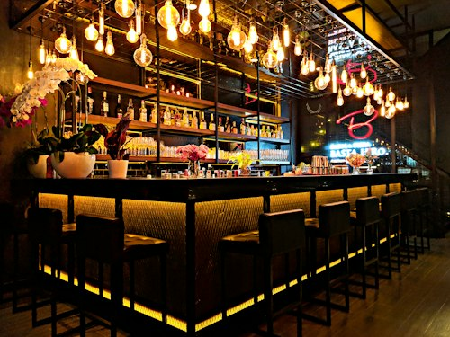
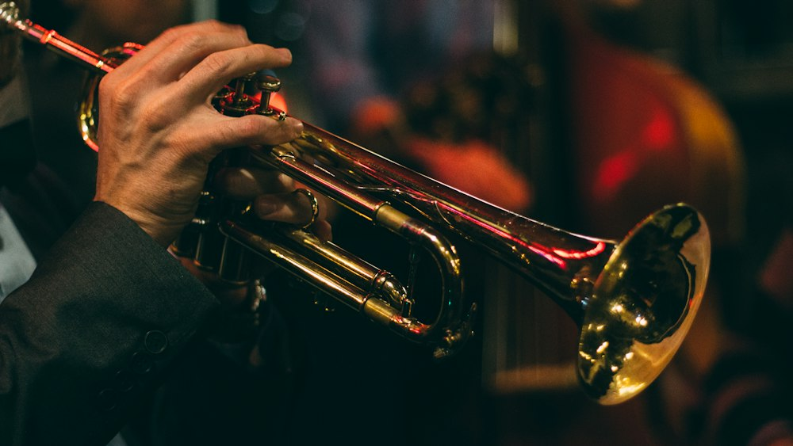
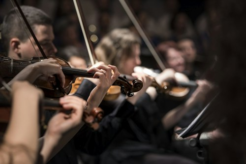
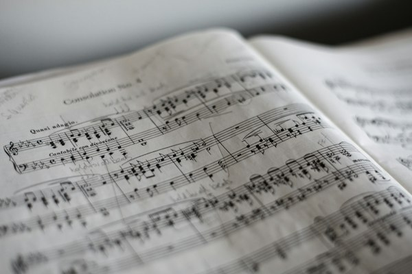
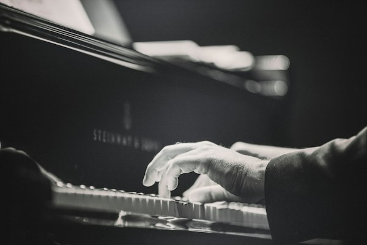

Café Vinilo
Zona: Almagro, CABA
Géneros: Jazz, Tango acústico, Piano solista
Espacio emblemático con piano de cola disponible, acústica cuidada y menú artesanal.
Aforo: 60 pers.
Consultar fecha →
El punto de encuentro entre músicos independientes y espacios culturales
Conectamos a músicos independientes con cafés, bares y salas culturales para simplificar la gestión de fechas en vivo, al tiempo que facilitamos al público el descubrimiento de recitales íntimos y económicamente accesibles en cada rincón de la ciudad.

Explorá los locales adheridos a la red. Cada tarjeta funciona como un aviso comunitario donde podés consultar la propuesta artística, el aforo y la disponibilidad para tocar o asistir.

Zona: Almagro, CABA
Géneros: Jazz, Tango acústico, Piano solista
Espacio emblemático con piano de cola disponible, acústica cuidada y menú artesanal.

Zona: San Telmo, CABA
Géneros: Blues, Bossa Nova, Fusión
Patio colonial adaptado con ciclos de trasnoche los fines de semana y micrófono abierto.
Zona: Colegiales, CABA
Géneros: Canción de autor, Neo-Soul, Clásico
Bar de cócteles clásicos que ofrece un piano vertical alemán afinado semanalmente para los artistas.
Zona: Vicente López, Gran Buenos Aires
Géneros: Indie Pop, Folk, Experimental
Club autogestionado con escenario a la altura del público, entrada a la gorra y feria gráfica.
El proyecto surge como respuesta concreta a la necesidad de revitalizar la música en vivo en los barrios.
En la actualidad, tanto músicos como espacios culturales enfrentan dificultades cotidianas: las bandas y solistas emergentes dedican semanas a enviar mensajes para conseguir una fecha, muchas veces lidiando con condiciones desfavorables o exigencias desmedidas de venta de entradas. Por otro lado, los dueños de bares y centros barriales buscan ofrecer espectáculos de calidad, pero carecen de un canal directo para descubrir nuevos talentos.
Piano Bar propone una solución horizontal: un punto de encuentro ágil y centralizado diseñado bajo el concepto de una cartelera comunitaria de corcho. Aquí, el contacto es directo, transparente y sin intermediarios burocráticos.

Instantáneas de nuestras noches acústicas, la interacción del público y la atmósfera única de cada rincón.



Métricas que reflejan el crecimiento de la comunidad autogestionada y datos históricos sobre este formato.
Cafés literarios, bodegones culturales y bares con escenario en el circuito.
Solistas, dúos y agrupaciones de diversos géneros musicales registradas.
Funciones coordinadas de forma directa y transparente entre artistas y locales.
Presencia activa en comunas de Capital Federal y partidos de la provincia de Buenos Aires.
Recursos recomendados para profundizar sobre la autogestión musical y la historia de estos espacios.
Conocé el origen histórico, evolución y rol cultural de los piano bares en el mundo.
Leer en Wikipedia ↗Disfrutá de grabaciones en vivo, sesiones de piano acústico y recitales íntimos seleccionados.
Ver en YouTube ↗Instituto Nacional de la Música: convocatorias, derechos de autor y herramientas para músicos.
Visitar Sitio Oficial ↗Seguí la agenda cultural semanal, convocatorias abiertas y novedades de la escena en Instagram.
Seguir en Instagram ↗Escribinos para incorporar tu proyecto musical o registrar tu local a la red colaborativa de Piano Bar.
Dejanos tus datos y nos pondremos en contacto para coordinar fechas y disponibilidad de horarios: